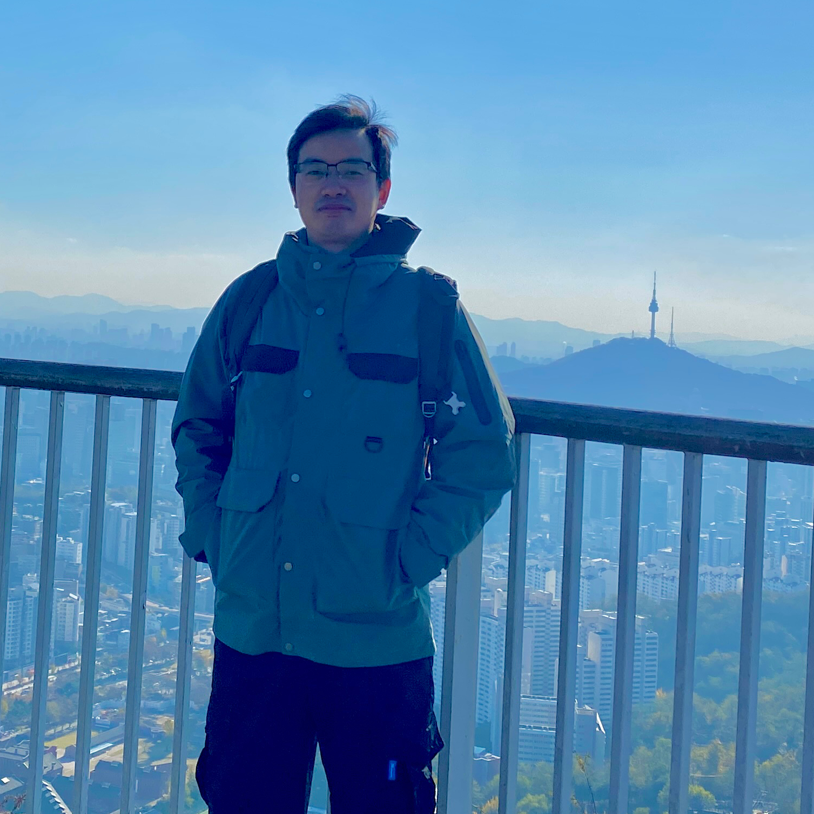

Personal Information

Cheng Deruo, Ph.D.
Senior Research Scientist
Nanyang Technological University (NTU), Singapore
Temasek Laboratories (TL) @ NTU
Email: deruo.cheng@ntu.edu.sg
Biography
I am a Senior Research Scientist working on hardware security and machine learning.
Education Experience
Ph.D. in Hardware Security and Machine Learning
Nanyang Technological University, Singapore
BEng (First-Class Honors) in IC Design
Nanyang Technological University, Singapore
Work Experience
Senior Research Scientist
Temasek Laboratories @ NTU, Singapore
- Destructive security analysis of manufactured ICs
- Multi-modal inspection of PCBs
- Development of AI/ML algorithms and tools
Research Scientist
Temasek Laboratories @ NTU, Singapore
- Destructive security analysis of manufactured ICs
- Multi-modal inspection of PCBs
- Development of AI/ML algorithms and tools
Visiting Researcher
Yonsei University, Seoul, South Korea
- Development of pattern classification algorithms
Research Assistant
Temasek Laboratories @ NTU, Singapore
- Data recovery from flash memory devices
- Investigation of file encryptions in mobile devices
Student Assistant
Temasek Laboratories @ NTU, Singapore
Student Intern
Infineon Technologies AG, Munich, Germany
- Tape-out
Awards and Funding
Research Quality Award 2025
2025Temasek Laboratories @ NTU, Singapore
Research Quality Award 2024
2024Temasek Laboratories @ NTU, Singapore
Co-Principal Investigator (Co-PI)
Mar 2024Automated IC Recognition and Verification from PCB Image, SGD500K
Research Quality Award 2023
2023Temasek Laboratories @ NTU, Singapore
Innovation Grant Award, Principal Investigator (PI)
Apr 2023Deep Learning for Hardware Assurance, SGD15K
Publications
- "Explainable Error Detection in Integrated Circuits Image Segmentation via Graph Neural Networks." Transactions on Machine Learning Research (TMLR), 2026.
- "FPGA IP Identification using Graph Neural Network (GNN) with Out-of-Distribution (OOD) Detection." In IEEE International Symposium on the Physical and Failure Analysis of Integrated Circuits (IPFA), 2026.
- "Meta: Graph-encoded Printed Circuit Board Datasets for Component Classification with Graph Neural Networks." IEEE Data Descriptions, 2026.
- "SAMSEM - A Generic and Scalable Approach for IC Metal Line Segmentation." IACR Transactions on Cryptographic Hardware and Embedded Systems, 2026.
- "ICNet: Multi-Modality Image Analysis for IC Localization in Printed Circuit Boards." In IEEE International Symposium on Circuits and Systems (ISCAS), 2026.
- "Non-destructive Printed Circuit Board Layout Verification Using A Deterministic Diffusion-guided Framework." Engineering Applications of Artificial Intelligence, 2026.
- "Advancing Training Stability in Unsupervised SEM Image Segmentation for IC Layout Extraction." Journal of Cryptographic Engineering, 2025.
- "MKFi: Multi-Window Kernel for Few-Shot WiFi CSI-Based Human Activity Recognition with Temporal Robustness." Pattern Recognition, 2025.
- "Multi-Orientation OCR Pipeline for IC Printed Mark Recognition." In IEEE International Symposium on the Physical and Failure Analysis of Integrated Circuits (IPFA), 2025.
- "Unsupervised Domain Adaptation for IC Image Segmentation with Structural Constraint and Pseudo Supervision." Microelectronic Engineering, 2025.
- "Integrated Circuit Image Synthesis for Unsupervised Circuit Annotation via Shape Consistent Image Translation." IEEE Intelligent Systems, 2025.
- "SSRNet: Few-shot IC Segmentation in Automated PCB Image Processing." In IEEE International Symposium on Circuits and Systems (ISCAS), 2025.
- "Long-Short-GNN: a Novel Graph Neural Network for Detecting FPGA IP Circuits for Hardware Assurance." In IEEE International Symposium on Circuits and Systems (ISCAS), 2025.
- "Multiple Hypothesis Testing for SEM Image Processing: A Case Study on Standard Cell Partition." In IEEE International Symposium on Circuits and Systems (ISCAS), 2025.
- "Data-Efficient Deep Learning for Printed Circuit Board Defect Detection Using X-ray Images." IEEE Transactions on Instrumentation & Measurement, 2025.
- "SAMIC: Segment Anything Model for Integrated Circuit Image Analysis." In IEEE Region 10 Conference (TENCON), 2024.
- "GNNReveal: A Novel Graph Neural Network-based Attack Method for IC Logic Gate De-Camouflaging." IEEE Intelligent Systems, 2024.
- "Unpaired Synthesis of IC Scanning Electron Microscopy Images with Structural Constraints." In IEEE International Conference on Imaging Systems and Techniques (IST), 2024.
- "PCB Surface Component Detection with Computer Vision Assisted Label Generation." In IEEE International Symposium on the Physical and Failure Analysis of Integrated Circuits (IPFA), 2024.
- "Unsupervised Domain Adaptation with Pseudo Shape Supervision for IC Image Segmentation." In IEEE International Symposium on the Physical and Failure Analysis of Integrated Circuits (IPFA), 2024.
- "MLConnect: A Machine Learning Based Connection Prediction Framework for Error Correction in Recovered Circuit." In IEEE International Symposium on Circuits and Systems (ISCAS), 2024.
- "A Strategic Framework for Evaluating Data Augmentation in Microscopic IC Image Analysis." In IEEE International Symposium on the Physical and Failure Analysis of Integrated Circuits (IPFA), 2023.
- "GoCLIP: Graph one-class CLassification for Intellectual Property Circuit Identification." In IEEE International Symposium on the Physical and Failure Analysis of Integrated Circuits (IPFA), 2023.
- "Deep-learning-based X-ray CT Slice Analysis for Layout Verification in Printed Circuit Boards." In IEEE International Conference on Artificial Intelligence Circuits & Systems (AICAS), 2023.
- "Unsupervised Graph-Based Image Clustering For Pretext Distribution Learning In IC Assurance." Microelectronics Reliability, 2023.
- "Integrated Circuit Mask-GAN for Circuit Annotation with Targeted Data Augmentation." IEEE Intelligent Systems, 2023.
- "Patch-based Adversarial Training for Error-aware Circuit Annotation of Delayered IC Images." IEEE Transactions on Circuits and Systems II: Express Briefs, 2023.
- "Domain-Integrated Machine Learning for IC Image Analysis." Fusion of Machine Learning Paradigms: Theory and Applications, Springer International Publishing, 2023.
- "Unsupervised Domain Adaptation with Histogram-gated Image Translation for Delayered IC Image Analysis." In IEEE Physical Assurance and Inspection of Electronics (PAINE), 2022.
- "Semantic-Masked Intensity Augmentation for Deep Learning-based Analysis of FPGA Images." In IEEE International Symposium on the Physical and Failure Analysis of Integrated Circuits (IPFA), 2022.
- "Hybrid Unsupervised Clustering for Pretext Distribution Learning in IC Image Analysis." In IEEE International Symposium on the Physical and Failure Analysis of Integrated Circuits (IPFA), 2022.
- "Delayered IC Image Analysis with Template-based Tanimoto Convolution and Morphological Decision." IET Circuits, Devices & Systems, 2022.
- "Joint Anomaly Detection and Inpainting for Microscopy Images Via Deep Self-Supervised Learning." In IEEE International Conference on Image Processing (ICIP), 2021.
- "Deep Learning-Based Image Analysis Framework for Hardware Assurance of Digital Integrated Circuits." Microelectronics Reliability, 2021.
- "Deep Learning-Based Image Analysis Framework for Hardware Assurance of Digital Integrated Circuits." In IEEE International Symposium on the Physical and Failure Analysis of Integrated Circuits (IPFA), 2020.
- "Global Template Projection and Matching Method for Training-Free Analysis of Delayered IC Images." In IEEE International Symposium on Circuits and Systems (ISCAS), 2019.
- "Deep Learning for Automatic IC Image Analysis." In IEEE International Conference on Digital Signal Processing (DSP), 2018.
- "A Hierarchical Multi-Classifier System for Automated Analysis of Delayered IC Images." IEEE Intelligent Systems, 2018.
- "Hybrid K-Means Clustering and Support Vector Machine Method for Via and Metal Line Detections in Delayered IC Images." IEEE Transactions on Circuits and Systems II: Express Briefs, 2018.
Invited Talks
"Deep Learning for Invasive Data Recovery from Flash Memories"
Hardware Reverse Engineering Workshop (HARRIS), Ruhr University Bochum, Germany
"Deep Learning-based IC Analysis for Hardware Security"
Yonsei University, Seoul, South Korea
"Deep Learning-based Analysis of Microscopic IC Images for Hardware Assurance"
Hardware Reverse Engineering Workshop (HARRIS), Ruhr University Bochum, Germany
"A Hierarchical Multi-Classifier System for IC Image Analysis"
Shenzhen University, Shenzhen, China
Teaching Experience
Lecturer for "EE6304: Digital IC Frontend Design"
Jun-Jul 2026School of Electrical and Electronic Engineering, Nanyang Technological University
Lecturer for "EE6305: Digital IC Backend Design"
Jun-Jul 2026School of Electrical and Electronic Engineering, Nanyang Technological University
Guest Lecturer for "AI in Semiconductor - IC SEM Image Analysis"
Apr 2026International Professional Master's Programme in Semiconductor Manufacturing, TUM Asia and NAMTECH
Lab Teaching for "NM6008 Digital IC Design"
Oct-Nov 2025, Aug-Oct 2024, Aug-Oct 2023NTU-TUM MSc Programme in IC Design
Lecturer for "CET945 Hardware Security and Design for Trust"
Nov 2024NTU Academy for Professional and Continuing Education (NTU PACE)
Lecturer for "CET944 Hardware Trojan Threats and Countermeasures"
Nov 2024NTU Academy for Professional and Continuing Education (NTU PACE)
Lecturer for "CET920 Fault-Injection Attacks & Hardware Trojan"
Feb-Apr 2024NTU Academy for Professional and Continuing Education (NTU PACE)
Lecturer for "CET919 Design for Trust"
Jul-Oct 2023NTU Academy for Professional and Continuing Education (NTU PACE)
Lecturer for "CET918 Hardware Security Analysis via Chip Analysis"
Oct 2022 - Jan 2023NTU Academy for Professional and Continuing Education (NTU PACE)
Academic Experience
Professional Service
IEEE Committee
- IEEE CASS DSP Technical Committee (TC) Member
- IEEE CASS Singapore Chapter Committee Member
Editorial
- Editorial Board Member, Insights of Electrical Engineering and Technology
- Topical Advisory Panel Member, Electronics
Conference
- Technical Committee Member for the 8th International Conference on Computer Vision and Computational Intelligence (CVCI 2027)
- Live Demonstrations Chair for IEEE Asia Pacific Conference on Circuits and Systems (APCCAS 2026)
- Technical Committee Member for the 7th International Conference on Computer Vision and Computational Intelligence (CVCI 2026)
- Technical Committee Member for the International Conference on Image, Vision and Computing (ICIVC 2023-2025)
- Live Demonstrations Chair for IEEE International Symposium on Circuits and Systems (ISCAS 2024)
- Special Session Organizer for "Physical Hardware Evaluation from Design Trust to System Reliability", ISCAS 2024
- Program Committee Member for the 5th International Conference on Medical Imaging and Computer-Aided Diagnosis (MICAD 2024)
- Program Committee Member for the 2nd International Conference on AI-generated Content (AIGC 2024)
Journal Reviewer
- IEEE Transactions on Information Forensics & Security
- IEEE Transactions on Circuits and Systems for Video Technology
- IEEE Transactions on Circuits and Systems I: Regular Papers
- IEEE Transactions on Instrumentation & Measurement
- Engineering Applications of Artificial Intelligence
- Scientific Reports
- Computers in Industry
- Pattern Recognition Letters
- Measurement
- The Journal of Supercomputing
- Journal of Real-Time Image Processing
- Journal of Hardware and Systems Security
- Machine Vision and Applications
- Microscopy and Microanalysis
- IET Image Processing
- Imaging and Radiation Research
- Electronics
- Integration
- Machines
- Applied Sciences
- Sensors
- Algorithms
Conference Reviewer
- IEEE Region 10 Conference (TENCON 2024)
- IEEE International Symposium on Circuits and Systems (ISCAS 2020-2026)
- International Conference on Electrical, Computer and Energy Technologies (ICECET 2024)
- International Conference on Image, Vision and Computing (ICIVC 2023-2024)
- IEEE Biomedical Circuits and Systems Conference (BioCAS 2019)
- IEEE International System-on-Chip Conference (SOCC 2019)